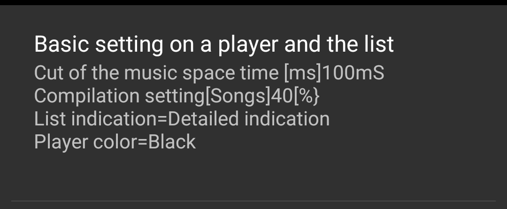
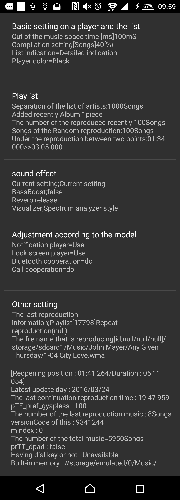
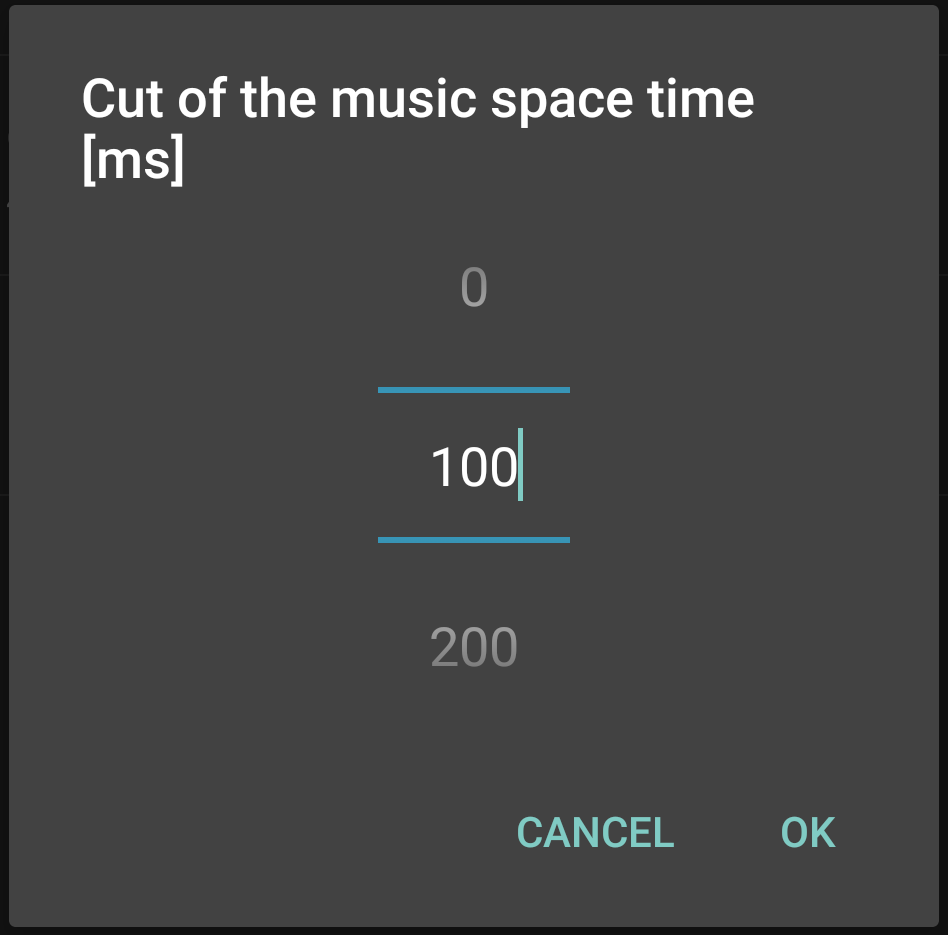
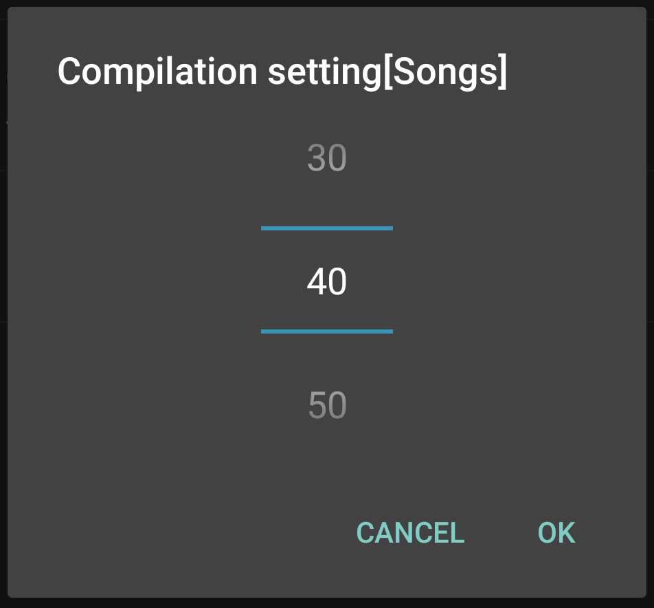
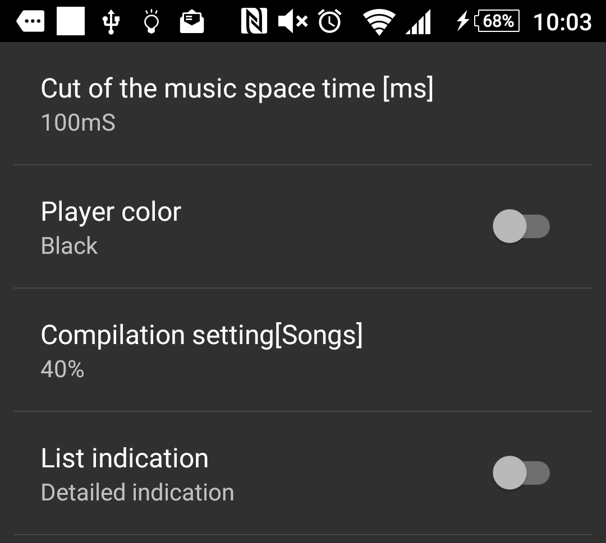
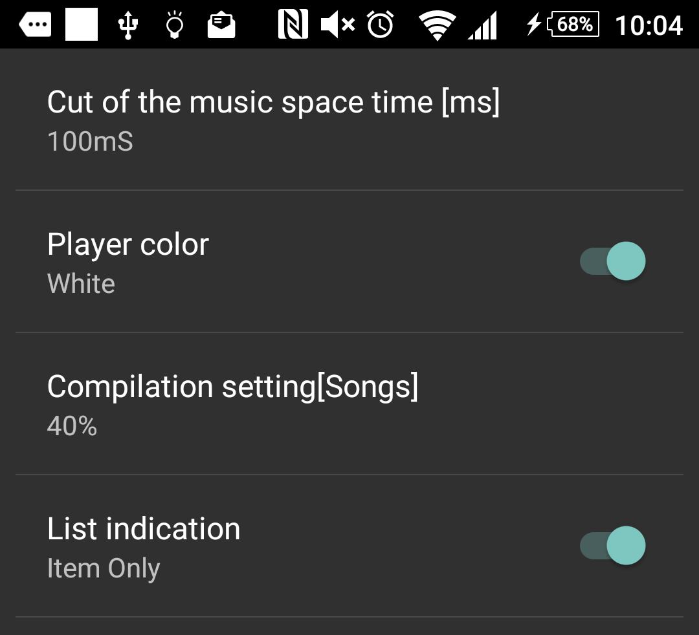

|
Music player usable commonly MaraSongs |
|
| Preference screen | ||
| It is this screen not to operate setting to seldom change and operates it | ||
Basic setting on a player and the list |
It collected set points about setting and the operation of the player screen. |   | |
|
Cut of the music space time [ms
 |
It is number of seconds to cut a gap of one second in the basic specifications of the CD.
|
||
|
Compilation setting[%]
 |
The album which the musical piece of various artists was recorded in is called " compilation album ", If the music of the
same artist is several pieces or enters, it is the leader album of the artist and thresholding to do it.
|
||
| List indication |
I can choose it whether a music player of Android is a standard thumbnail and the simple list only for an attached information
list with it or letters.
|
  | |
| Player color |
I change a White Russian and the black system of the Android standard.


|
||
Play List |
It is setting about playlist operation and the making |


|
|
Separation of the list of artists
|
The list which may become long including the music that reproduced makes the list of the artist / album / title of three classes recently.
|
||
The album which I added recently
|
I extract the music that reproduced by an album unit recently.
|
||
The music that reproduced recently

|
I appoint it recently whether it dates back several pieces from the music that reproduced, and you list it.
|
||
The number of the setting music of the random reproduction

|
It is the number of the music to extract by random reproduction.
|
||
| Reproduction between two points (Reference indication) |
There was not it by setting it here, but was able to confirm it what happened to the set points of an origin and the endpoint if I regenerated two points of rooms now. | ||
sound effect |
It is sound quality setting-related reference indication and the setting of the visualizer to set from the menu of the player. |


|
|
Visualizer

|
It is the choice of the visualizer to display if I perform a flick of an indication department of the jacket art laterally.
|
||
Adjustment according to the model |
It is the use right or wrong of the function that movement varies according to constitution of a version and the hardware of Android.
|

|
|
| Notification Player | It is a player displayed in the displayed information indication (Notification) domain when I drag icon, there below in the top of the screen that antenna PICT is displayed. |


|
|
| Lock screen Player | It is a player displayed from a lock screen (the screen which became black with backlight as Off) by the lock screen which is displayed when I returned. | ||
| It is linked by connection of Bluetooth |
I stop when cut by connected Bluetooth apparatus. I reopen reproduction when reconnected.
|
||
| Call cooperation |
After a call was over; self-replication
|
||
Other setting |
I monitor it and show what is recorded any place other than a setting item. |

|
|
Resume reproduction information
|
|||
| Play list |
[list ID] display a reproducing playlist by a list name now.
|
||
| Reproduction file name |
It is the URL of the file which reproduced last last time.
|
||
| Reopening position | It is the time from the top of the music to a stopped point. | ||
| Reproduction time | It is length of the music | ||
| The last continuation reproduction time | This has nothing to do with the consecutive reproduction, but records a count when I closed application for indication. | ||
| The storage situation (here displays reference, too) of the music file | |||
| It is the situation of a music file stored by a terminal. If here is a change in recorded numerical value, I update the list of all songs. | |||
| The number of the total albums and the number of total music | It is a folder and an increase and decrease record of the number of the files. | ||
| Latest update day |
It is update / addition day of changed music in all music files recently.
|
||
| Storage place of the music file | It is the folder which Android detected as "audiophile " on the media of memory card and the each built-in memory. | ||
| Other setting (I display reference mainly) | |||
It is a system and information of the hardware.
|
|||
| API level | It is numerical value to correspond to the version of the Android OS. | ||
| Having dial key or not | I judge that I operate a multi-guide key with "which there is " in and then select a proper item when I started each screen. I judge that I operate a multi-guide key with "which there is " in and choose a proper item when I started each screen. | ||
| I could rarely use it, but located it in " or other setting " for an Easter egg. | |||
| Setting initialization |
It is the function that I settled for a precaution when there is not it and has been broken though how about the configuration file.
|

|
|
| Reset of the list of adjustment | I reset MaraSongs's original adjustment list to coordinate as an album of the artists except an artist name registered with phi in a list of all songs. | ||